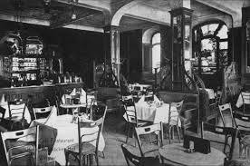
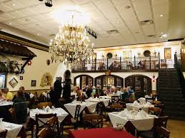

*and we are COVID-FREE.
About Yumazing
As a family owned and operated business for over fifty years, our guiding principle in all aspects of our hospitality service is our commitment to excellence, integrity, value and customer satisfaction. We cordially invite and welcome you to join us in a warm and relaxed setting for lunch or dinner.
You’ll find a host of inventive vegetarian recipes for breakfast, lunch, and dinner, but I also want Love and Lemons to be a resource for you. We have guides to working with vegetables ranging from spaghetti squash to asparagus and tips for cooking plant-based basics like quinoa, rice, and lentils.
And after all those veggies, I always save room for dessert! In my opinion, healthy eating is all about balance, so you’ll find recipes for brownies, cakes, cookies, and more here too.
Yumazing Restaurant was founded by the late Chef Anthony Papa, Popocatepetl and Brad's father , and opened its doors in September 1958.
From a young age the Popocatepetl and Brad found themselves immersed in the culinary world.
Often school vacations were spent in the restaurant kitchen, under their father’s supervision, learning their craft.
Today, with a legacy of excellence for over fifty years, the tradition and enthusiasm for Yumazing restaurant lives on.
Anywhere you go in the world, it’s likely you’ll find a restaurant. According to some resources, the concept of a restaurant began in the 18th century in France, while other sources note of places such as coffee houses opening in the 1600s.
Now cooking for their third generation of guests, the Popocatepetl and Brad continue to maintain an unwavering commitment to quality, consistency and innovation. Their cooking is always evolving, bringing their guests the tastes and flavors of all the twenty regions of the Italian peninsula. Specialty breads of five regions are produced daily in their in-house bakery. Specialty pastas, sausages, fish and cheeses are all prepared in house, along with a luscious range of inventive homemade desserts.
Anywhere you go in the world, it’s likely you’ll find a restaurant. According to some resources, the concept of a restaurant began in the 18th century in France, while other sources note of places such as coffee houses opening in the 1600s.
Come visit us, we are open. Don't forget to try our special pancakes. You won't regret! Welcome to Yumazing restaurant - best restaurant in the area!